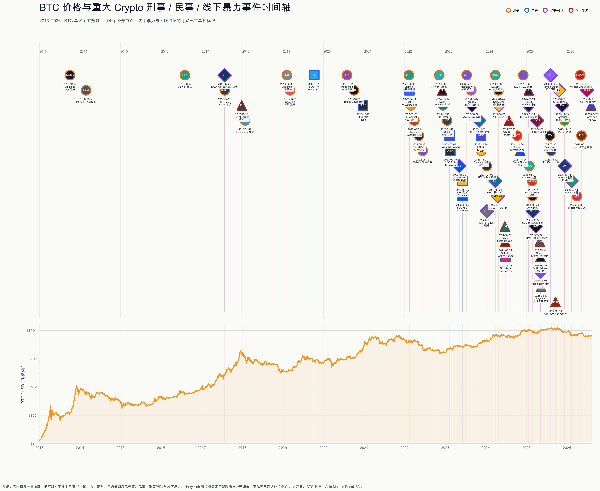

我把 2013 至 2026 年 74 个重大 Crypto 刑事、民事、政策和线下暴力节点放进一张 BTC 时间轴。第一眼最反直觉：执法消息通常没把 BTC 砸下去，真正的大跌几乎都发生在提款、资产负债表或核心基础设施突然失效的时候。

能动价格的，是可提现性
样本中，9 个“公开危机或盗窃”节点之后，BTC 的中位数回报是 1 日 -6.0%、7 日 -12.2%、30 日 -12.8%。15 个“司法或执法”节点对应的是 -0.5%、+1.2%、+5.1%。
FTX 挤兑爆发后 1 日 -23.4%，Celsius 暂停提款后 -21.3%，TerraUSD 失控脱锚后 -9.0%。三件事的共同点很朴素：钱突然拿不出来了，或者大家发现账上的钱可能根本不在。
这不是因果估计。样本按行业影响力挑选，事件窗口也会重叠。但它把风险分得很清楚。BTC 不读新闻稿，它先看谁的钱拿不出来。
一宗案子，经常有五个日期
犯罪公开、逮捕、起诉、认罪或定罪、量刑，市场面对的是五种完全不同的信息。把它们压成一个“某人出事”的点，价格机制就被画错了。
FTX 对价格真正重要的日期是 2022 年 11 月 8 日的挤兑，不是之后的逮捕、定罪和判刑。后面的司法节点确认了责任，市场早就先给资产负债表投完票了。
这也解释了为什么很多起诉和判决并不天然利空 BTC。它们常常只是旧信息落地，甚至减少了尾部不确定性。只有执法同时带来服务查封、资产冻结、管理层突然退出或客户资金受限，法律事件才更容易升级成价格事件。
图上越来越密的三角形
时间轴里，圆形是刑事，方形是民事，菱形是政策或判决，三角形是线下暴力与 Crypto 关联待证的可疑死亡。
2017 年，EXMO 员工 Pavel Lerner 被绑架，超过 100 万美元等值 Bitcoin 赎金支付后获释。到 2024 至 2025 年，三角形开始挤在一起：Kevin Mirshahi 被绑架后遇害；Ledger 联合创办人 David Balland 遭绑架并被切断一根手指；纽约案的指控包括控制受害者 17 日并逼其交出 Bitcoin 密码；明州一家三口被持枪控制，其中一人被押去取硬件钱包。仍在审理的案件，报告都保留无罪推定。
这些事通常不会让 BTC 日线动一下，却会直接改变持有人、创办人和家属的 security perimeter。钱包安全过去总把密码学当上限，现实里的攻击者不需要破解曲线，只要找到住址。
公开持仓、住址、行程和家属信息，会把链上财富变成一张线下目标清单。单签、助记词和硬件钱包放在同一个可胁迫位置，也是在给攻击者留下单点。地理分离的多人授权、延时撤销和胁迫应急流程，现在应该跟冷钱包一样基础。
Harry Yeh 为什么只标“关联待证”
最后一个三角形发生在 2026 年 8 月 7 日。Harry Yeh 被发现死于 Asunción Jade Park 高层公寓楼外，其 30 层房门开着，室内被翻乱，检方下令尸检。
目前公开材料只能确认他的 Crypto 投资者身份、坠亡现场和被翻乱的公寓。没有公开的一手警方、检方或法医材料证明他杀，也没有证据证明 Crypto 是动机。所以报告保留这条线索，但不把它写成“Crypto 谋杀案”。
线索可以进入时间线，结论不能提前进入标题。
K 线只画出了风险的一半
犯罪公开与平台危机主要作用于价格，起诉与判决主要作用于制度边界，线下暴力主要作用于个人安全。三类风险混在一起，看到的就只剩“Crypto 又出事了”；拆开之后，才知道应该盯提款、盯案件阶段，还是先把现实世界的单点控制拿掉。
完整报告、74 个节点与可下载数据：
https://cbti.club/research/crypto-crime-timeline/